Private lessons
Private lessons Language practice
Language practice School subjects
School subjectsObserve a subject
Compare its silhouette with the space around it.
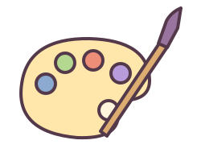
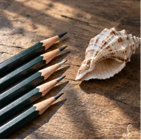
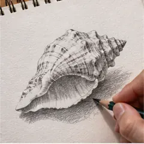
Compare its silhouette with the space around it.

Make a range of tones from just a few pigments.

Compare the marks left by a pencil and a brush.

Decide which detail to develop next.
Choose an activity to bring to your next session.
Choose a goal to see the activities you can work through with your tutor.
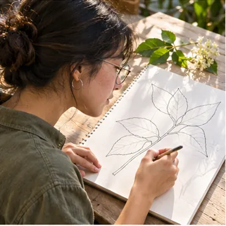
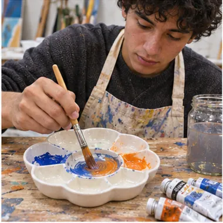
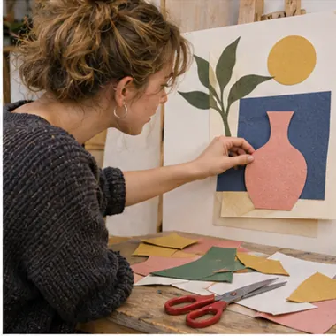
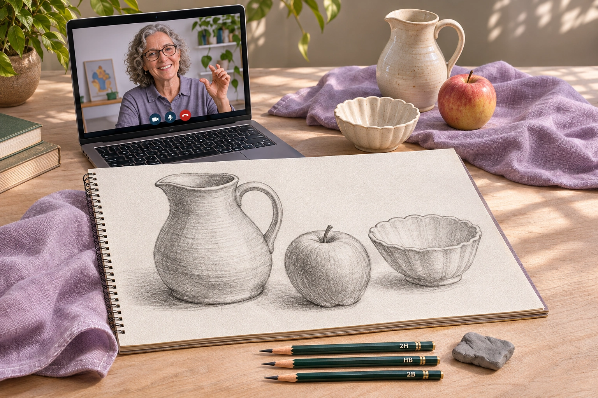
Keep the drawing that records your first observations.
Save your mixes so you can recreate a shade.
Use a viewfinder to plan your next composition.
Observe shapes before drawing their outlines.
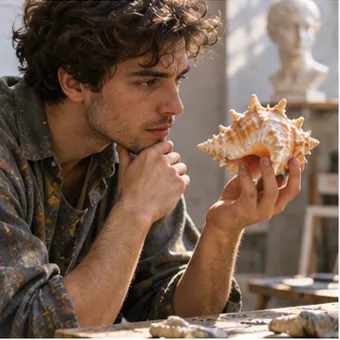
Look closelySample your medium before the main study.
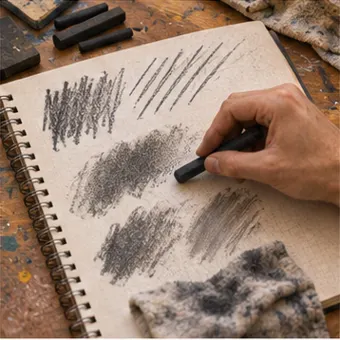
Test a materialCompare two versions of the same composition.
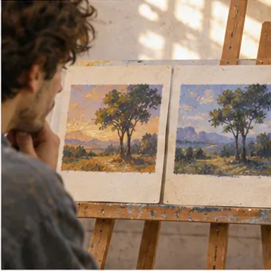
Change one thingCollect experiments to track what works.
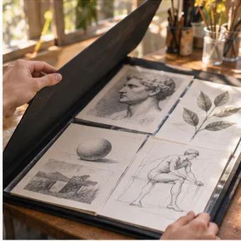
Keep your studiesBring one sticking point and practise a way through it.
Request this session$40USD · 50 minSpend the lesson using a skill with feedback as you go.
Request this session$55USD · 60 minBring a draft, presentation or solution for a detailed review.
Request this sessionFind out what to bring, how to show your work and where to begin with a sketchbook.
Ask about art lessonsA pencil, plain paper and a small object to draw are enough. If you want to paint, tell us which paints and brushes you already own.
Yes. Your tutor can begin with outlines, simple shapes and comparing the proportions of an everyday object.
Hold the page up to your camera in good light. For fine details, take a clear photograph and ask your tutor how best to share it.
Bring the piece and one question about it. You might compare possible crops, adjust values or test colours on a separate sheet.
Choose portfolio feedback and describe the work you would like to review. Mention any submission brief or deadline so the tutor can plan the session.
Bring a sketch, a favourite material or an object you would like to draw.